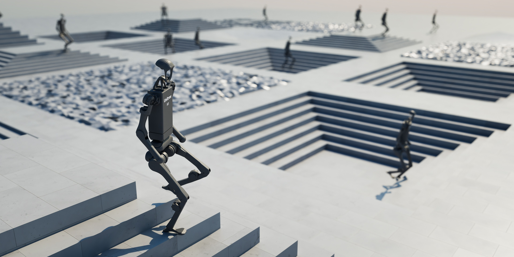
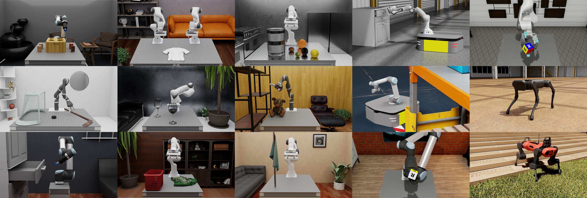

欢迎来到 Isaac Lab！#


注意
本翻译项目不属于 NVIDIA 或 IsaacLab 官方文档，由 范子琦 提供中文翻译，仅供学习交流使用，禁止转载或用于商业用途。详情请查看 关于翻译 章节。
官方文档提供多个版本。本站由本项目的 main 分支发布，当前译文以官方 release/3.0.0 分支为基准。除下述旧版存档外，不提供完整的历史版本翻译。
旧版 2.x 中文文档已迁至 https://docs.robotsfan.com/isaaclab_v2/。使用 Isaac Lab 2.x 时，请查阅该存档。
由于 1.x 与后续版本的 API 差异较大，本站保留了一份 1.x 文档存档（并非严格对应最终的 1.4.1 版本），可通过 https://docs.robotsfan.com/isaaclab_v1 访问。
如果您需要基于 Isaac Lab 开发独立扩展项目，请参考 robot_lab 项目。
如果您想将 Isaac Lab 训练的模型部署到实际机器人，或在 Gazebo/MuJoCo 中仿真，请参考 rl_sar 项目。
Isaac Lab 是一个统一、模块化的机器人学习框架，旨在简化机器人研究中的常见工作流程，包括强化学习、模仿学习和运动规划。它支持使用 NVIDIA Isaac Sim 构建逼真的场景并进行 RTX 渲染，也可以独立使用 Newton 物理后端，在不安装完整 Isaac Sim 的情况下实现高效仿真。
该框架的核心目标包括:
模块化: 轻松定制并添加新的环境、机器人和传感器。
灵活性: 适应社区的不断变化需求。
开放性: 保持开源，允许社区贡献和扩展该框架。
功能齐全: 包括多种环境、传感器和任务，可供直接使用。
Isaac Lab 的主要功能包括：由 PhysX 和 Newton 后端提供的快速、准确的物理仿真；用于向量化渲染的平铺渲染 API，支持 RTX 和 Newton 相机传感器；用于提高鲁棒性和适应性的域随机化；以及云端运行支持。
备注
从 Isaac Lab 2.x 升级？ 请参阅 迁移到 3.0 ，了解全部不兼容变更，以及 Isaac Lab 3.0 引入的多后端架构。
Isaac Lab 提供了多种环境，并持续增加新的环境，涵盖经典控制、固定机械臂操作、灵巧操作、足式运动和导航任务。你可以在 环境浏览器 中查看已注册的任务，并生成运行命令。
Isaac Lab 内置多种机器人资产， 开箱即用 ，可直接用于学习任务。包括以下机器人：
经典 Cartpole, Humanoid, Ant
固定机械臂和机械手: UR10, Franka, Allegro, Shadow Hand
四足机器人 ：Anybotics AnymalB、AnymalC、AnymalD、Unitree A1、Unitree Go1、Unitree Go2、Boston Dynamics Spot
人型机器人: Unitree H1, Unitree G1
四轴飞行器: Crazyflie
平台还设计了可以让您添加自己的机器人！具体操作方法请参阅 操作指南 部分。
有关该框架的更多信息，请参阅 技术报告 [MRT+25] 。有关 NVIDIA Isaac 生态系统的阐述，请查看 生态系统 部分。


许可#
Isaac Lab 框架在 BSD-3-Clause 许可下开源，其中某些部分在 Apache-2.0 许可下开源。请参阅 许可证 以获取更多详细信息。
引用#
如果您在研究中使用 Isaac Lab，请引用我们的技术报告：
@article{mittal2025isaaclab,
title={Isaac Lab: A GPU-Accelerated Simulation Framework for Multi-Modal Robot Learning},
author={Mayank Mittal and Pascal Roth and James Tigue and Antoine Richard and Octi Zhang and Peter Du and Antonio Serrano-Muñoz and Xinjie Yao and René Zurbrügg and Nikita Rudin and Lukasz Wawrzyniak and Milad Rakhsha and Alain Denzler and Eric Heiden and Ales Borovicka and Ossama Ahmed and Iretiayo Akinola and Abrar Anwar and Mark T. Carlson and Ji Yuan Feng and Animesh Garg and Renato Gasoto and Lionel Gulich and Yijie Guo and M. Gussert and Alex Hansen and Mihir Kulkarni and Chenran Li and Wei Liu and Viktor Makoviychuk and Grzegorz Malczyk and Hammad Mazhar and Masoud Moghani and Adithyavairavan Murali and Michael Noseworthy and Alexander Poddubny and Nathan Ratliff and Welf Rehberg and Clemens Schwarke and Ritvik Singh and James Latham Smith and Bingjie Tang and Ruchik Thaker and Matthew Trepte and Karl Van Wyk and Fangzhou Yu and Alex Millane and Vikram Ramasamy and Remo Steiner and Sangeeta Subramanian and Clemens Volk and CY Chen and Neel Jawale and Ashwin Varghese Kuruttukulam and Michael A. Lin and Ajay Mandlekar and Karsten Patzwaldt and John Welsh and Huihua Zhao and Fatima Anes and Jean-Francois Lafleche and Nicolas Moënne-Loccoz and Soowan Park and Rob Stepinski and Dirk Van Gelder and Chris Amevor and Jan Carius and Jumyung Chang and Anka He Chen and Pablo de Heras Ciechomski and Gilles Daviet and Mohammad Mohajerani and Julia von Muralt and Viktor Reutskyy and Michael Sauter and Simon Schirm and Eric L. Shi and Pierre Terdiman and Kenny Vilella and Tobias Widmer and Gordon Yeoman and Tiffany Chen and Sergey Grizan and Cathy Li and Lotus Li and Connor Smith and Rafael Wiltz and Kostas Alexis and Yan Chang and David Chu and Linxi "Jim" Fan and Farbod Farshidian and Ankur Handa and Spencer Huang and Marco Hutter and Yashraj Narang and Soha Pouya and Shiwei Sheng and Yuke Zhu and Miles Macklin and Adam Moravanszky and Philipp Reist and Yunrong Guo and David Hoeller and Gavriel State},
journal={arXiv preprint arXiv:2511.04831},
year={2025},
url={https://arxiv.org/abs/2511.04831}
}
致谢#
Isaac Lab 的开发起源于 Orbit 框架。我们衷心感谢 Orbit 的作者们所做的奠基性贡献。
目录#
开发工具
源码 API